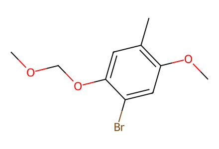
COCOc1cc(C)c(OC)cc1Br18 个结构、12 个制备事件、13 条有结构端点的操作记录，连通三条目标路线。覆盖本文从已知中间体 11 开始的成功合成；保留 er/dr、原文未指定的环氧立体化学和原文冲突。待独立专家复核。
完整 JSON · 逐步 CSV · 路线序列 · SDF · HRMS 核对
| 事件 | 分子连接 | 报告产率 | Canonical reaction SMILES |
|---|---|---|---|
| E01 | 11 + ethyl-bromoacetate → 10 | 10: 59% | CCOC(=O)CBr.COCOc1cc(C)c(OC)cc1Br>>COCOc1cc(C)c(OC)cc1CC(=O)O |
| E02 | 10 + iodopropane → 9 | 9: 79% | CC(C)I.COCOc1cc(C)c(OC)cc1CC(=O)O>>COCOc1cc(C)c(OC)cc1[C@H](C(=O)O)C(C)C |
| E03 | 9 → 12 | 12: 89% | COCOc1cc(C)c(OC)cc1[C@H](C(=O)O)C(C)C>>COCOc1cc(C)c(OC)cc1[C@H](CI)C(C)C |
| E04 | 12 + tms-propyne → 8 | 8: 82% | CC#C[Si](C)(C)C.COCOc1cc(C)c(OC)cc1[C@H](CI)C(C)C>>C#CCC[C@@H](c1cc(OC)c(C)cc1O)C(C)C |
| E05 | 8 → 14b + 14a | 14b: 44%; 14a: 18% | C#CCC[C@@H](c1cc(OC)c(C)cc1O)C(C)C>>C=C1CC[C@H](C(C)C)[C@@]12C=C(OC)C(C)=CC2=O.C=C1CC[C@H](C(C)C)[C@]12C=C(OC)C(C)=CC2=O |
| E06 | 14b → 15 | 15: 68% | C=C1CC[C@H](C(C)C)[C@@]12C=C(OC)C(C)=CC2=O>>COC1=C[C@@]2(C(=O)C=C1C)[C@H](C)CC[C@@H]2C(C)C |
| E07 | 15 → 7 | 7: 89% | COC1=C[C@@]2(C(=O)C=C1C)[C@H](C)CC[C@@H]2C(C)C>>CC1=CC(=O)[C@]2(CC1=O)[C@H](C)CC[C@@H]2C(C)C |
| E08 | 7 → 4 | 4: 91% | CC1=CC(=O)[C@]2(CC1=O)[C@H](C)CC[C@@H]2C(C)C>>CC1=CC(=O)[C@]2(C(=O)C1=O)[C@H](C)CC[C@@H]2C(C)C |
| E09 | 4 → 5 | 5: 100% | CC1=CC(=O)[C@]2(C(=O)C1=O)[C@H](C)CC[C@@H]2C(C)C>>CC1=C(N)C(=O)[C@]2(C(=O)C1=O)[C@H](C)CC[C@@H]2C(C)C |
| E10 | 7 → 17 | 17: 92% | CC1=CC(=O)[C@]2(CC1=O)[C@H](C)CC[C@@H]2C(C)C>>CC(C)[C@H]1CC[C@@H](C)[C@]12CC(=O)C1(C)OC1C2=O |
| E11 | 17 → 18 | 18: 82% | CC(C)[C@H]1CC[C@@H](C)[C@]12CC(=O)C1(C)OC1C2=O>>CC1=C(O)C(=O)[C@]2(CC1=O)[C@H](C)CC[C@@H]2C(C)C |
| E12 | 18 → 6 | 6: 76% | CC1=C(O)C(=O)[C@]2(CC1=O)[C@H](C)CC[C@@H]2C(C)C>>CC1=C(O)C(=O)[C@]2(C(=O)C1=O)[C@H](C)CC[C@@H]2C(C)C |

COCOc1cc(C)c(OC)cc1Br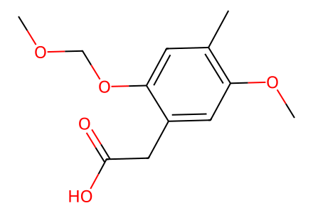
COCOc1cc(C)c(OC)cc1CC(=O)O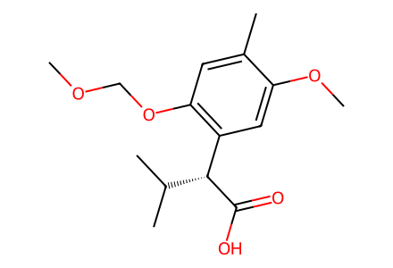
COCOc1cc(C)c(OC)cc1[C@H](C(=O)O)C(C)C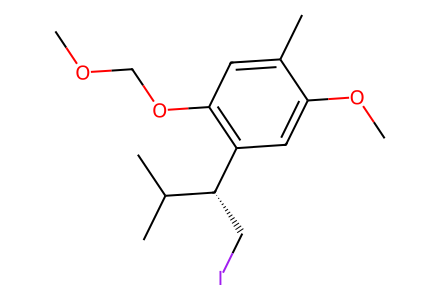
COCOc1cc(C)c(OC)cc1[C@H](CI)C(C)C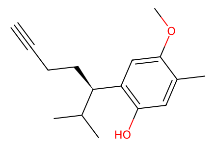
C#CCC[C@@H](c1cc(OC)c(C)cc1O)C(C)C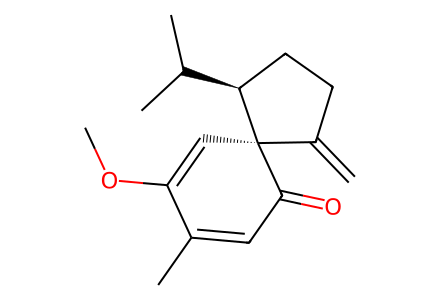
C=C1CC[C@H](C(C)C)[C@@]12C=C(OC)C(C)=CC2=O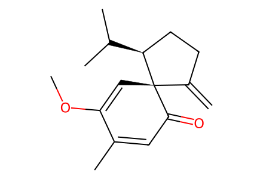
C=C1CC[C@H](C(C)C)[C@]12C=C(OC)C(C)=CC2=O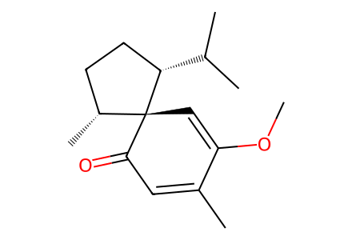
COC1=C[C@@]2(C(=O)C=C1C)[C@H](C)CC[C@@H]2C(C)C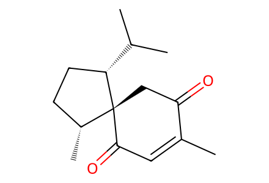
CC1=CC(=O)[C@]2(CC1=O)[C@H](C)CC[C@@H]2C(C)C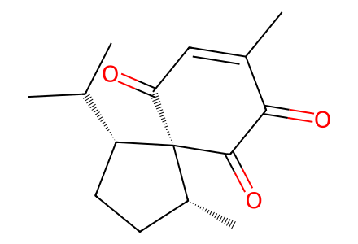
CC1=CC(=O)[C@]2(C(=O)C1=O)[C@H](C)CC[C@@H]2C(C)C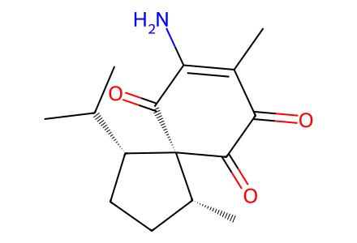
CC1=C(N)C(=O)[C@]2(C(=O)C1=O)[C@H](C)CC[C@@H]2C(C)C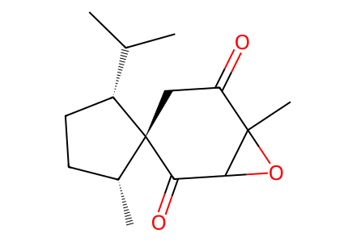
CC(C)[C@H]1CC[C@@H](C)[C@]12CC(=O)C1(C)OC1C2=O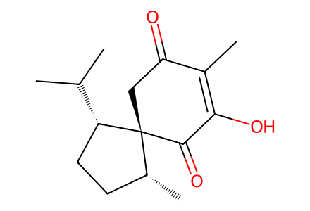
CC1=C(O)C(=O)[C@]2(CC1=O)[C@H](C)CC[C@@H]2C(C)C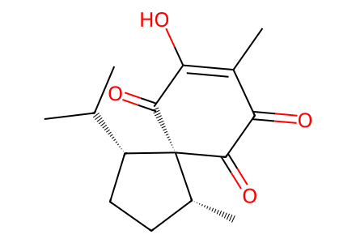
CC1=C(O)C(=O)[C@]2(C(=O)C1=O)[C@H](C)CC[C@@H]2C(C)C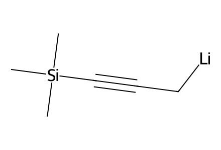
[Li][CH2]C#C[Si](C)(C)C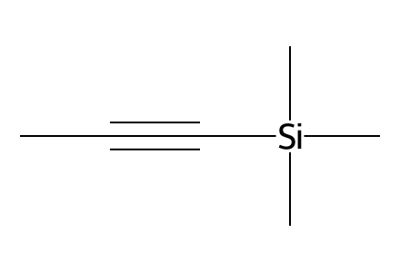
CC#C[Si](C)(C)C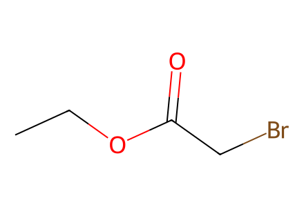
CCOC(=O)CBr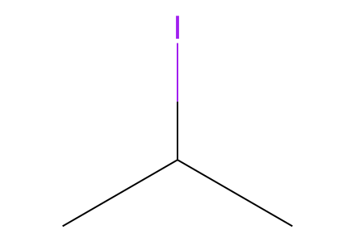
CC(C)I